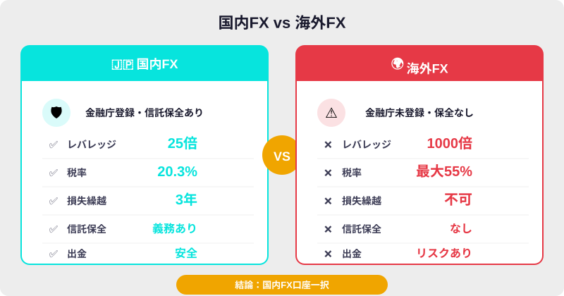
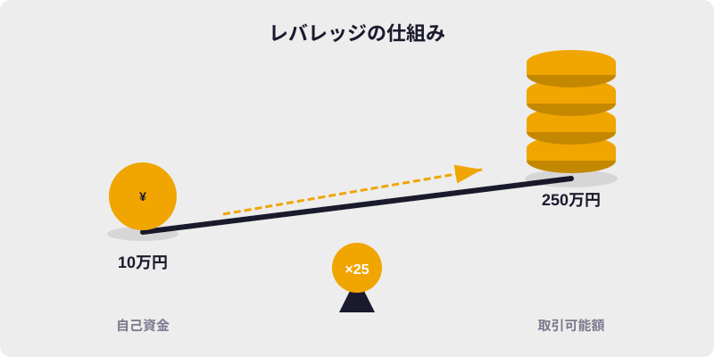
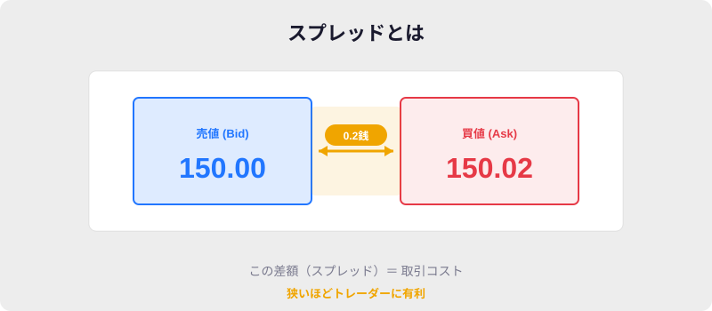
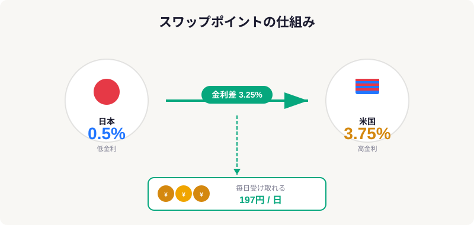

FXを
始めたい
📌 この記事でわかること
- ✅ 海外FXではなく国内FX口座を選ぶべき理由（税率・安全性・法規制）
- ✅ 国内主要7社のスプレッド・スワップ・ツール・スキャルピング対応を一覧比較
- ✅ あなたの投資スタイルに合った最適な口座が見つかる
📖 目次
🌐 海外FX vs 国内FX — どちらを選ぶべきか

FX口座を選ぶとき、まず直面するのが「海外口座か国内口座か」という問題です。結論から言えば、国内口座一択です。その理由を、海外FX大手XMTradingと国内FXを比較しながら解説します。
🌍 海外FX（例: XMTrading）
- ❌ レバレッジ最大1,000倍（ハイリスク）
- ❌ 税率: 総合課税最大55%
- ✅ ゼロカットシステムあり
- ❌ 損失繰越不可
- ❌ 信託保全義務なし
- ❌ 金融庁未登録
VS
🇯🇵 国内FX（金融庁登録業者）
- ✅ レバレッジ最大25倍（規制で安全）
- ✅ 税率: 申告分離課税一律20.315%
- ❌ ゼロカットなし（追証あり）
- ✅ 損失3年間繰越可能
- ✅ 信託保全義務あり
- ✅ 金融庁登録済み
| 比較項目 | 海外FX（XMTrading） | 国内FX |
|---|---|---|
| 最大レバレッジ | 1,000倍 | 25倍 |
| 税率 | 総合課税 最大55% | 一律20.315% |
| 損失繰越 | 不可 | 3年間可能 |
| ゼロカット | あり | なし（追証あり） |
| 信託保全 | 義務なし | 義務あり |
| スプレッド | やや広い | 業界最狭水準 |
| 出金の安全性 | トラブル報告あり | 国内銀行で安全 |
20.3%
国内FX税率（一律）
利益額に関係なく固定
利益額に関係なく固定
55%
海外FX最大税率
利益が増えるほど負担増
利益が増えるほど負担増
3年
国内FX損失繰越
不調の年もカバー
不調の年もカバー
0年
海外FX損失繰越
繰越不可
繰越不可
📊 年間利益別・税金シミュレーション
国内FXと海外FXでどれだけ税金が違うか、バーチャートで比較します。
💡 結論: 国内口座一択
利益が330万円を超えると海外FXの税率は国内を上回り始め、利益が大きくなるほど差は拡大します。2,000万円の利益なら差額400万円。FXで安定して利益を出すことを目指すなら、最初から国内口座を選ぶべきです。

🏦 なぜ国内口座一択なのか — ゼロカット神話の危険性
海外FXの最大の「売り」はゼロカットシステムです。口座残高がマイナスになっても業者が損失を補填してくれる仕組みです。一見安全に見えますが、ゼロカットを前提にしている時点で、リスク管理ができていないと言わざるを得ません。
01 — ゼロカット = リスク管理の放棄
ゼロカットが発動する状況とは、口座残高を超える損失が発生する異常事態です。そもそも適切な損切り注文を設定し、ポジションサイズを資金に対して適正に管理していれば、口座残高がゼロになる事態は起こりません。ゼロカットを「安全装置」として期待している時点で、FXで安定して稼ぐことは困難です。
02 — なぜ国内FXにゼロカットがないのか
金融商品取引法第39条で「顧客の損失の全部又は一部を補填する行為」が明確に禁止されています。ゼロカットは法律上の「損失補填」に該当するため、国内業者は提供できません。これは投資家保護ではなく、むしろ「損失は自己責任」という健全な投資原則に基づいています。
03 — レバレッジ25倍で十分な理由
100万円の資金でレバレッジ25倍なら2,500万円分の取引が可能です。USD/JPYで約15万通貨。1日の変動幅が1円（100pips）なら15万円の利益/損失。これは資金の15%に相当し、十分すぎるリスクです。レバレッジ1,000倍は「ギャンブル」であり、「トレード」ではありません。
04 — 税金面での圧倒的有利
年間利益500万円の場合: 国内FXなら税金約101万円（20.315%）、海外FXなら約153万円（所得税20%+住民税10%+復興税）。差額52万円。利益が大きくなるほど差は広がり、1,000万円の利益なら差額は約150万円にもなります。さらに国内FXは損失を3年間繰り越せるため、不調の年の損失を翌年以降の利益と相殺できます。
05 — 信託保全で資金が守られる
国内FX業者は顧客資金を信託銀行に分別管理する義務があります。万が一業者が破綻しても、顧客の資金は全額保護されます。海外FXにはこの義務がなく、業者の経営破綻時に資金を失うリスクがあります。
✅ 国内FX口座選びの5大チェックポイント
国内FX口座を選ぶ際に比較すべき5つの軸を解説します。以降のセクションで各項目を7社徹底比較します。
① スプレッド
売値と買値の差。取引コストに直結。USD/JPYで0.1銭の差でも、年間1,000回取引すれば大きな差になります。「原則固定」の適用時間帯にも注意。
② スワップポイント
通貨間の金利差で毎日受け取れる収益。長期保有（スイングトレード）の場合は特に重要。業者によって同じ通貨ペアでも日額50円以上の差が出ます。
③ 取引ツール・TradingView連携
チャート分析の快適さ。TradingViewを普段使っている方は、業者ツールのチャートが多少見づらくても問題ありません。みんなのFXはTradingViewが無料で内蔵されています。
④ スキャルピング可否
超短期売買（数秒〜数分）を行うなら、スキャルピングが公認されている業者を選ぶ必要があります。禁止されている業者では口座凍結のリスクがあります。
⑤ 最小取引単位
1通貨（約6円）から取引できる業者もあれば、1万通貨（約60万円相当）が最低の業者もあります。少額で始めたい初心者は要チェック。
💱 スプレッド徹底比較

スプレッドは取引コストに直結します。以下は主要3通貨ペアの比較です（原則固定、例外あり）。列ヘッダーをクリックするとソートできます。
| 業者 | USD/JPY | EUR/JPY | GBP/JPY | 固定時間 |
|---|---|---|---|---|
| DMM FX | 0.2銭 | 0.4銭 | 0.9銭 | 9:00〜翌5:00 |
| GMOクリック証券 | 0.2銭※ | 0.4銭 | 0.9銭 | 9:00〜翌3:00 |
| SBI FXトレード | 0.18銭 | 0.48銭 | 0.88銭 | 常時変動 |
| みんなのFX | 0.15銭 | 0.38銭 | — | 8:00〜翌5:00 |
| ヒロセ通商 | 0.2銭 | 0.4銭 | 0.9銭 | 9:00〜翌3:00 |
| JFX | 0.2銭 | 0.4銭 | 0.9銭 | 9:00〜翌3:00 |
| 外為どっとコム | 0.2銭 | 0.4銭 | 0.9銭 | 9:00〜翌3:00 |
📊 USD/JPY スプレッド ビジュアル比較（狭いほど有利）
バーが短いほどコストが低く有利です。
⚠️ スプレッドの注意点
・GMOクリック証券は2024年末にUSD/JPY 0銭（ゼロ）を適用した実績あり。提示率95%超
・みんなのFXの0.15銭はLIGHTペア適用時。通常ペアは0.2銭
・早朝（5:00〜9:00頃）、重要指標発表時、年末年始はスプレッドが大幅拡大
💰 スワップポイント比較

スワップポイントは通貨間の金利差で毎日受け取れる収益です。長期保有（スイングトレード）の方は特に重視すべき項目。列ヘッダーをクリックでソート。
| 業者 | USD/JPY 買い | 特徴 |
|---|---|---|
| DMM FX | 130円台 | 買い・売り同一の「一本値」方式。売りポジションが有利 |
| GMOクリック証券 | 高水準 | 多通貨ペアで安定的に業界上位 |
| SBI FXトレード | 156円 | 安定した中〜高水準 |
| みんなのFX | 197円 | 業界最高水準。ハンガリーフォリント円等マイナー通貨も充実 |
| ヒロセ通商 | — | 54通貨ペア対応で選択肢が広い |
| JFX | — | スキャル向け。スワップはヒロセ通商と同等 |
| 外為どっとコム | — | キャンペーンでスワップ増量あり |
📊 USD/JPY 買いスワップ ビジュアル比較（1万通貨/日）
バーが長いほどスワップ収入が多く有利です。
💡 DMM FXの「一本値」方式とは？
通常、買いスワップと売りスワップには差があり（買い200円 / 売り-230円 等）、業者がその差額を利益にしています。DMM FXは買い・売りが同額（例: 買い+130円 / 売り-130円）のため、売りポジションを持つトレーダーにとってはコストが低く有利です。ただし買いスワップは他社より低め。
71,905円
みんなのFX
197円 × 365日
197円 × 365日
56,940円
SBI FXトレード
156円 × 365日
156円 × 365日
47,450円
DMM FX
130円 × 365日
130円 × 365日
📈 スワップだけで年間7万円以上
みんなのFXでUSD/JPYを1万通貨（約160万円分）保有するだけで、年間約71,905円のスワップ収入。10万通貨なら約72万円。寝ているだけで金利差益が入ります。
🛠 取引ツール比較 & TradingView連携

| 業者 | PC主要ツール | TradingView | 特徴 |
|---|---|---|---|
| DMM FX | DMM PLUS | 非対応 | レイアウト自由度高。初心者向き |
| GMOクリック証券 | はっちゅう君FX / プラチナチャート | 非対応 | 直感的操作。スマホアプリも高評価 |
| SBI FXトレード | Rich Client Next | 非対応 | 1通貨〜対応。初心者に最適 |
| みんなのFX | FXトレーダー | 内蔵（無料） | TradingView有料機能を無料で利用可。通貨強弱等の独自ツールも |
| ヒロセ通商 | LION FX C2 | 非対応 | 10秒足チャート。スキャル特化機能充実 |
| JFX | MATRIX TRADER | 非対応 | 0.2秒更新チャート。分析用MT4無料提供 |
| 外為どっとコム | リッチアプリ / Web版 | 非対応 | 情報量No.1。FXスクールで学べる |
💡 TradingViewユーザーへのアドバイス
普段TradingViewでチャート分析をしている方は、業者ツールのチャートの見やすさはそれほど重要ではありません。分析はTradingView側で行い、注文の発注だけ業者ツールで行う運用が実用的です。
ただしみんなのFXはTradingViewが無料で内蔵されており、通常月額約8,000円の有料プラン相当の機能が使えます。TradingViewの有料プランを検討中の方は、みんなのFXの口座を開設するだけでコストを節約できます。
一方、JFXは分析専用のMT4を無料提供しており、MT4派のトレーダーにも対応しています。
⚡ スキャルピング対応比較
スキャルピング（数秒〜数分の超短期売買）は業者によって対応が大きく異なります。禁止されている業者で行うと口座凍結のリスクがあるため、必ず確認してください。
| 業者 | スキャルピング | 約定速度 | 備考 |
|---|---|---|---|
| DMM FX | 禁止 | — | 約款で明記。口座凍結リスクあり |
| GMOクリック証券 | 不明確 | — | 明確な公認/禁止の言及なし |
| SBI FXトレード | 不明確 | — | 明確な公認なし |
| みんなのFX | 不明確 | — | 明確な公認なし |
| ヒロセ通商 | 公認 | 最速0.001秒 | オリコン12年連続1位。カバー先23行 |
| JFX | 公認 | 最速0.001秒 | 約定率99.99%。連打注文OK |
| 外為どっとコム | 公認 | — | 情報量×スキャルピングの組み合わせ |
なぜDMM FXはスキャルピング禁止なのか？
国内FX業者の多くはDD（ディーリングデスク）方式を採用しており、顧客の注文を一旦業者が引き受けてからカバー取引を行います。大量の超短期注文はカバーが追いつかず業者の損失につながるため、DMM FXでは約款で「短時間での注文を繰り返し行う行為」を禁止しています。
🎯 目的別おすすめ口座
あなたの投資スタイルに合った口座を見つけましょう。下のボタンをクリックすると、総合比較表で該当する業者がハイライトされます。
🗺️ 口座選びフローチャート
あなたのトレードスタイルから最適な口座を導きます。
🤔
→
💰
少額で
試したい？
試したい？
→
✅
SBI FX
1通貨〜
1通貨〜
📊
スワップで
稼ぎたい
稼ぎたい
→
🏆
みんなの
FX
FX
⚡
スキャル
したい
したい
→
🎯
ヒロセ通商
/ JFX
/ JFX
📚
勉強しながら
やりたい
やりたい
→
📖
外為
どっとコム
どっとコム
🔰 初心者 → SBI FXトレード
1通貨（約6円）から取引可能で実質デモトレードとして使える。オリコン初心者部門6年連続1位。全34通貨ペアが1通貨から対応。
SBI FXトレード公式サイト →
SBI FXトレード公式サイト →
💰 スワップ運用 → みんなのFX
USD/JPY買いスワップ197円/日で業界最高水準。ハンガリーフォリント円やチェココルナ円など高金利マイナー通貨も充実。TradingView無料内蔵も魅力。
みんなのFX公式サイト →
みんなのFX公式サイト →
⚡ スキャルピング → ヒロセ通商 / JFX
🏆 総合力 → GMOクリック証券
スプレッド・ツール・安定性の三拍子が揃う。FX取引高世界1位を10年間維持。スプレッド提示率95%超で滑りにくい。東証プライム上場の信頼性。
GMOクリック証券公式サイト →
GMOクリック証券公式サイト →
📚 情報重視 → 外為どっとコム
自社シンクタンク「外為どっとコム総合研究所」を持ち、情報量は業界No.1。マネ育FXスクールで初心者も段階的に学べる。HDI格付け7年連続三ツ星。
外為どっとコム公式サイト →
外為どっとコム公式サイト →
📊 TradingViewユーザー → みんなのFX
月額約8,000円相当のTradingView有料機能が無料で内蔵。通貨強弱やポジションブック等の独自分析ツールも。TradingViewの有料プランを節約できます。
みんなのFX公式サイト →
みんなのFX公式サイト →
📊 総合比較表
PR — 広告
FX取引を始めるなら
FX取引高3年連続世界第1位のDMM FXなら、最短即日で口座開設が可能です。
※ 投資にはリスクが伴います。FX取引は元本を超える損失が発生する可能性があります。
⚠️ 免責事項・ディスクレーマー
本記事は情報提供のみを目的としており、金融商品の売買の勧誘や投資助言を目的とするものではありません。掲載されている情報は作成時点のものであり、正確性、完全性、適時性を保証するものではありません。スプレッド・スワップポイント等の数値は変動します。最新の情報は各社公式サイトでご確認ください。投資判断は必ずご自身の責任において行ってください。本記事に基づく投資行動による損失について、筆者・サイト運営者は一切の責任を負いません。本記事に記載されている情報は、各FX業者の公式サイト、ザイFX!、みんかぶ、FXキーストン等の公開情報を参照し、筆者が独自に再構成したものです。
金融商品取引法に基づく表記：本記事は金融商品取引法第2条に定める金融商品取引業に該当する行為を行うものではありません。